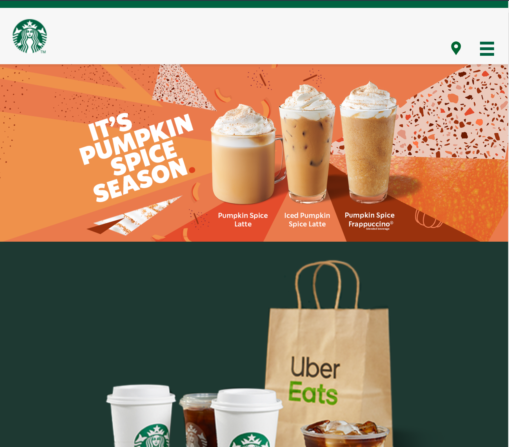
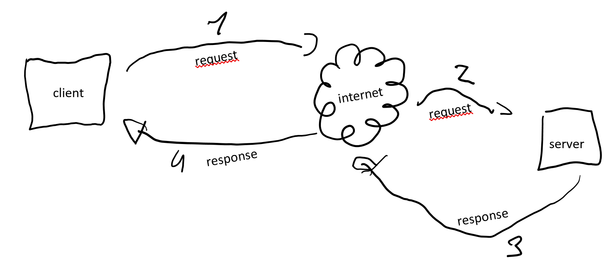
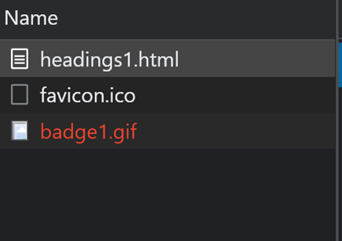
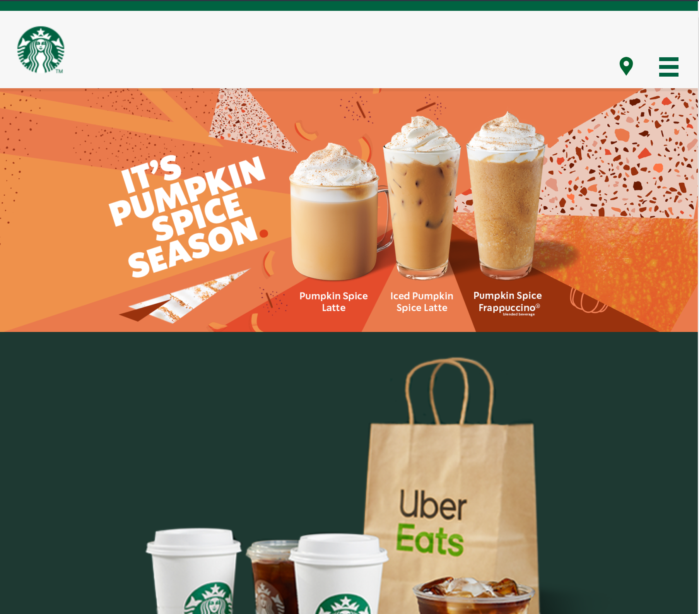

Start situatie full screen

Bij smallere window verandered de header van de pagina.
Nog smaller word de banner aangepast en word de layout van boven naar onder implaats van van links naar rechts.
http client-server schematische voorstelling
Duid de vershillende delen van de volgende URL
https:// www.bol.com /nl/p/hoe‐werkt‐dat‐nou/9200000057347012/ ?country=BE&suggestionType=browse #product_alternatives
Protocol
Host
Path
parameter
fragment
Open de Chrome ontwikkelaar tools (F12), ga naar het Network tabblad en surf naar https://www.htmldog.com/examples/headings1.html
Welke resources heeft je browser nog meer opgevraagd? Hoe zie je dit?
Welke andere soorten resources worden opgevraagd door het inladen van deze pagina?
Soorten resources: scripts, fonts, stylesheet, document…
Werden alle requests naar dezelfde server verstuurd?
Requests naar verschillende servers
Hoe kun je dit uit de timing informatie afleiden?
Er worden verschillende items op verschillende momenten opgevraagd
Afhankelijk van welke webmail provider je gebruikt, zul je zien dat er na verloop van tijd requests bijkomen ook al verandert er niks aan de webpagina. Waarvoor zouden die 'spontane' requests dienen?
Statistieken/voor advertenties/om te weten wat je al allemaal hebt bekeken
Wat betekent de status code 404 in de response header?
Page not found
Wat is het verschil met de vorige opdracht?
Bij de vorige opdracht bestond een subpagina niet van een bepaalde website, hier bestaat de hele pagina niet.
Zoek onderstaande HTTP status codes
| Goed gevold | Omleiding | Aanvraag fout | serverfout |
|---|---|---|---|
| 200 204 |
301 302 303 |
400 401 404 |
500 503 |
Zoek op het internet welke HTTP request methods er bestaan en schrijf ze neer.
POST, GET, PUT, PATCH, DELETE
Waarvoor dienen de vaak gebruikte GET en POST methods?
POST: The POST verb is most-often utilized to **create** new resources. GET: The HTTP GET method is used to **read** (or retrieve) a representation of a resource.
Waar in een request staat aangegeven om welke request method het gaat, en hoe vind je dit terug in de Chrome developer tools?
Je kan ziet om welke methode het gaat in de tabel bij Method
Als je een url in de adresbalk van je browser typt en op enter drukt, wat voor request method gebruikt de browser dan om die resource op te vragen bij de server?
GET
Als je in een webpagina op een gewone hyperlink klikt, welke request method wordt er dan gebruikt?
GET
(informatie)...
Wat zou er dan gebeuren met de productgegevens?
Als dit gebeurt word alle inhoud van alle paginas gewist.
Bekijk de vele requests die het inladen van die ene pagina heeft veroorzaakt. Hoeveel request waren er in totaal?
in totaal waren er 53 requests. (wss zijn verschillende resultaten mogelijk)
Hoeveel kilobytes of megabytes aan data werd er verstuurd om alle nodige resources in te laden?
3.1MB
Hoe lang duurde et vooraleer alle resources van de pagina waren ingeladen?
3.78s
Kijk nogmaals hoeveel data er werd verstuurd. Waarom is dit zoveel minder? Laadde de pagina sneller?
Bepaalde gegevens waren opgeslagen in het cache gegeugen.
Na het gewoon te herladen werd de website sneller geladen.
Waar kun je zien welke documenten daadwerkelijk verstuurd werden en welke niet?
Je kan zien wat er is verstuurd bij de size.
Waar vindt de browser dan de inhoud van de documenten die niet bij de server werden opgevraagd?
Je kan dit ook terug vinden bij de Size.
Schrijf bij elke webpagina hoeveel tracking scripts door Ghostery worden ontdekt.
Welke soorten tracking scripts je bent tegengekomen?
Veel voorkomend, analytics, advertising, facebook.
Hoeveel verschillende layouts tel je?
Start situatie full screen
Bij smallere window verandered de header van de pagina.
Nog smaller word de banner aangepast en word de layout van boven naar onder implaats van van links naar rechts.